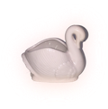
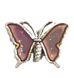

fortunes from the void
take only what you need
click the  for a fortune. take only what you need. think of a question. or anything, really. do you know where you’re going? it’s okay, you don’t have to. pick a word and think about it for the rest of the day. fix yourself a run-on sentence. you can even close your eyes and forget all about it. and come back soon, come back anytime. 
pink swan oracle is a series of punchlines and cryptic affirmations i’ve written and collected over 2018-2020. don’t tell anyone this but they each correlate to a tarot card. there’s two that don’t. i’m not going to tell you which ones.
the art of fortune telling is becoming more and more popular in today’s society where hope feels scarce. whether they offer entertainment or a strange sense of comfort, the internet has seen a sudden influx of tarot readers and gained access to mass spread - often simplified for easy consumption - esoteric knowledge. the idea of random is no longer meaningless but rather relabelled as synchronicities. perhaps there’s more to life after all.
it makes sense to crave divine validation, it parallels our human need for certainty. but for me, certainty and validation are tricky because they can be addicting. addiction drives us away from building connections with others but also with ourselves.
at times my soul felt so lost and helpless that looking for it meant having to confront the parts of myself that i’d been avoiding. it can be painful to see all the ways you’ve neglected yourself. however, if spirituality is about finding your own answers, i must not forget my sovereignty.
that means no one knows you like you do. and no one can make up your mind for you. putting value on others’ opinions or thoughts, or even measuring your own value based on your shortcomings or achievements can distort your reality. at the end of the day, we’re all just human beings perceiving life in our own ways, seeking connection.
these online readings can only give you something to think about - you have to figure out what they mean for you. you get to decide. will you recognize that your fears are just illusions and doubts about your identity? you are right where you’re meant to be and enough as you are. are you brave enough to believe it? are you brave enough to face the changes that realization could possibly bring?